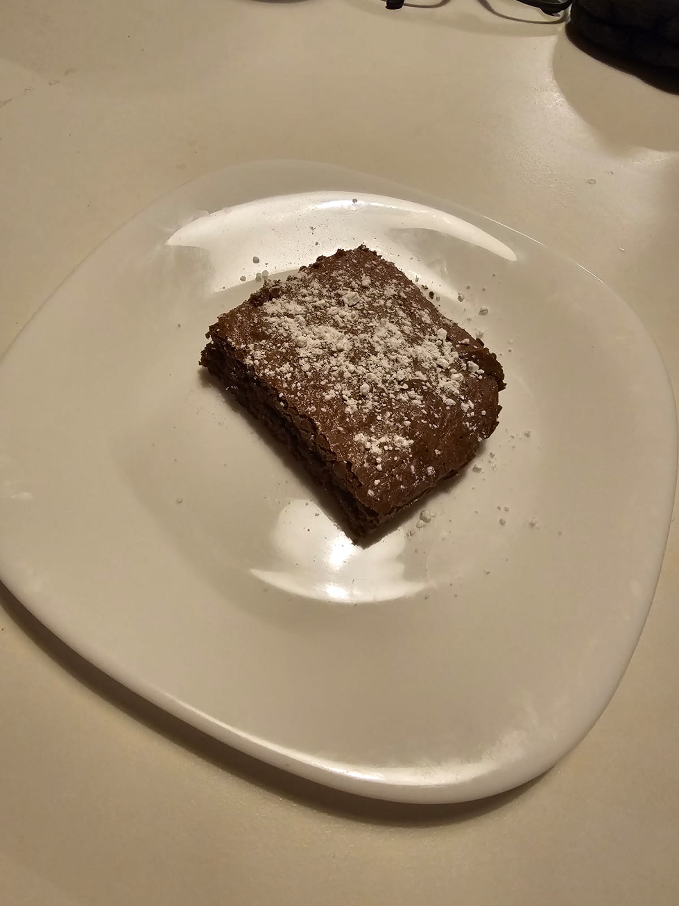

Torta al Cioccolato

Ingredienti
- 100 g di farina 00
- 100 g di burro
- 100 g di zucchero
- 2 uova
- Un bicchierino di latte
- 250 g di cioccolato fondente
Preparazione
- Sciogli a bagnomaria (o nel microonde) il cioccolato insieme al burro.
- In una ciotola, sbatti le uova con lo zucchero fino a ottenere un composto spumoso.
- Aggiungi la farina e il latte, mescolando bene per evitare la formazione di grumi.
- Accendi il forno a 180°C.
- Versa il cioccolato fuso nell’impasto e amalgama bene tutti gli ingredienti.
- Imburra e infarina (o rivesti con carta forno) una tortiera di circa 20 cm.
- Cuoci in forno per circa 35-40 minuti.
- Quando si formerà una crosticina in superficie, sforna pure il dolce: la “prova stuzzichino” non serve!